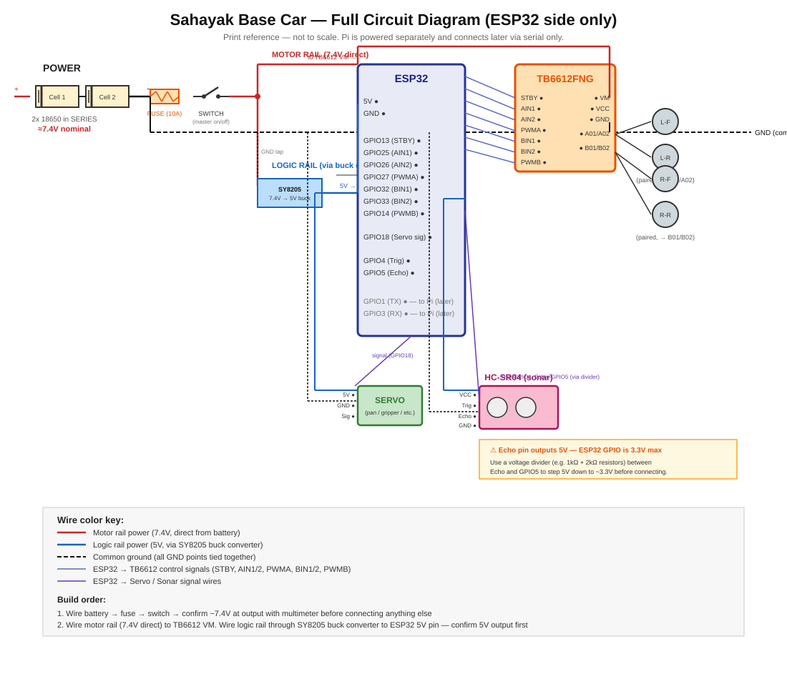
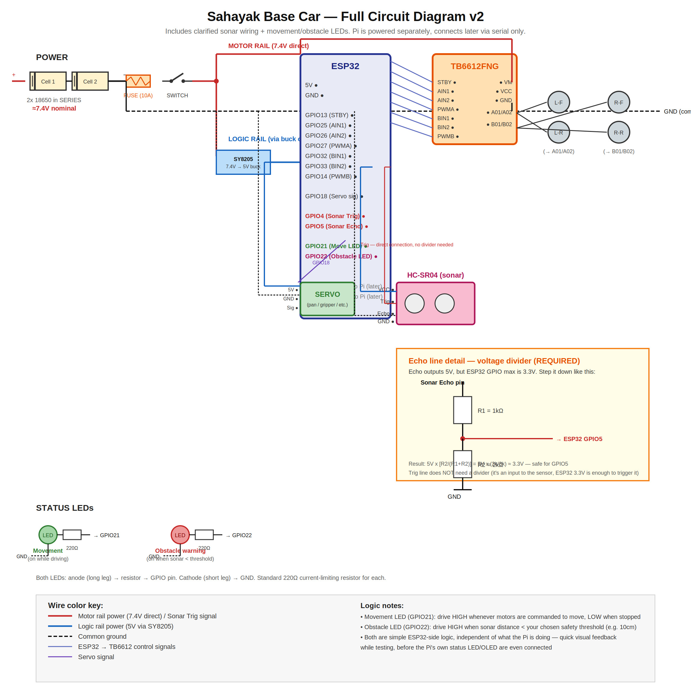

This is the wiring for a simple robot base car — the same build kids start from in the robotics workshop. An ESP32 is the brain, a TB6612FNG driver runs four wheel motors, a servo gives it a moving head or gripper, and an HC-SR04 sonar lets it "see" obstacles. A Raspberry Pi can be added later as a smarter brain, talking to the ESP32 over serial.
The circuit at a glance

Power: two rails, one ground
The car runs on two 18650 cells in series (about 7.4V), through a 10A fuse and a master switch. From there the power splits:
| Rail | Voltage | Feeds |
|---|---|---|
| Motor rail | 7.4V direct from battery | TB6612 VM pin (the motors) |
| Logic rail | 5V via an SY8205 buck converter | ESP32, servo, sonar |
| Ground | Common | Every GND point tied together |
Keeping motors and logic on separate rails stops motor noise from resetting the ESP32 — the number-one cause of robots that "randomly reboot". But all the grounds must be connected, or the control signals have no reference and nothing works.
ESP32 pin map
| ESP32 pin | Goes to | Job |
|---|---|---|
| GPIO13 | TB6612 STBY | Enables the motor driver |
| GPIO25 / GPIO26 | AIN1 / AIN2 | Left motors direction |
| GPIO27 | PWMA | Left motors speed |
| GPIO32 / GPIO33 | BIN1 / BIN2 | Right motors direction |
| GPIO14 | PWMB | Right motors speed |
| GPIO18 | Servo signal | Head / gripper position |
| GPIO4 | Sonar Trig | Sends the ping |
| GPIO5 | Sonar Echo (via divider) | Hears the echo |
| GPIO1 / GPIO3 | Pi RX / TX (later) | Serial link to a Raspberry Pi |
The two left motors are paired on driver channel A (A01/A02) and the two right motors on channel B (B01/B02) — so the car steers like a tank, by spinning each side at a different speed.
One safety detail: the sonar echo pin
The HC-SR04's Echo pin outputs 5V, but ESP32 pins are 3.3V maximum. Connecting it directly can damage the board over time. Put a simple voltage divider (for example a 1kΩ and a 2kΩ resistor) between Echo and GPIO5 to step the signal down to about 3.3V.
Printable version
A high-resolution version of the same diagram, good for printing and keeping next to the build:

Build order tips
- Wire the battery, fuse and switch first, and check the voltage with a multimeter before connecting anything else.
- Set the buck converter to 5V before plugging in the ESP32.
- Connect the motor driver and test one motor at a time.
- Add the servo, then the sonar (with its divider) last.